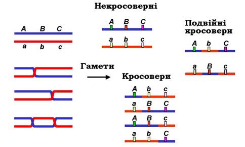

Відповідно до принципу незалежного наслідування Менделя, дигібридне схрещування з незв’язаними алелями повинно мати співвідношення 1:1:1:1. Якщо відбувається значне відхилення від цього співвідношення, це може бути свідченням зчеплення, тобто що локуси розташовані близько один до одного на одній парі хромосом. Під час мейозу пара сестринських хромосом складається з чотирьох хроматид, які називаються тетрадою. Кросинговер відбувається, коли гомологічні хроматиди в тетраді (по одному від кожного з двох батьків) під час профази обмінюються сегментами різної довжини. Точка зчеплення хроматид відома як хіазма. Тетрада зазвичай має принаймні одну хіазму по своїй довжині. Як правило, чим довша хромосома, тим більше число хіазм. Існують дві теорії фізичної природи процесу. Класична теорія припускає, що спочатку відбуваються кросинговер і утворення хіазми, а потім розрив і возз’єднання з реципрокними гомологами. Відповідно до цієї теорії утворення хіазм не обов’язково супроводжується розривом хромосом. Крім того, згідно з хіазматипічною теорією, спочатку відбувається розрив, а потім зламані нитки знову з’єднуються. Таким чином, хіазми є свідченням, але не причиною схрещування. Останні молекулярні докази підтримують останню теорію, хоча жодна з них не є повністю задовільним поясненням усіх процесів.

У дигібридних схрещуваннях розташування, в якому алелі дикого типу обох локусів внесені одним з батьків, називають цис-конфігурацією; альтернативне розташування називається трансконфігурацією. Гамету, яка показує таку ж конфігурацію, що і батьківська, називають батьківським типом; де конфігурація змінена, гамету називають рекомбінантним типом. Цис і транс конфігурації змінюються рекомбінацією. Зв'язок між локусами вказується, коли рекомбінантні фенотипи зустрічаються рідше, ніж батьківські типи. Частота кросинговеру (% рекомбінації) між двома локусами безпосередньо пов’язана з фізичною відстанню між цими двома локусами.